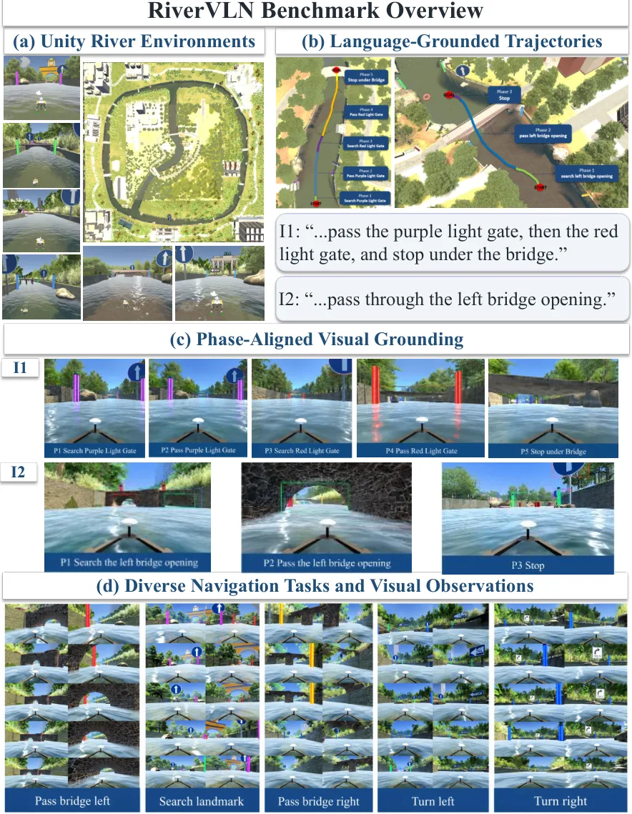
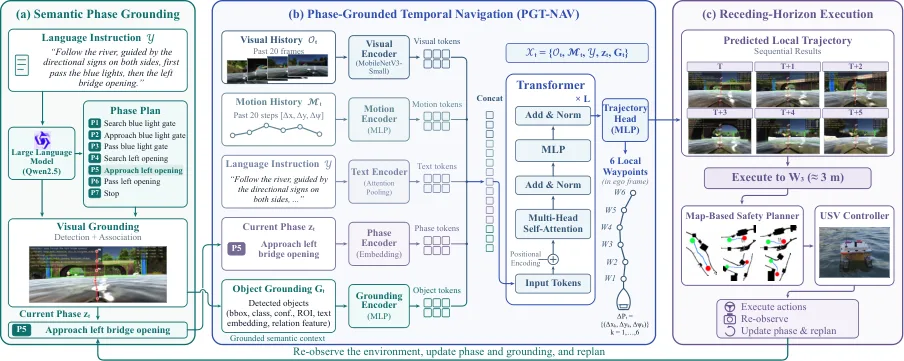
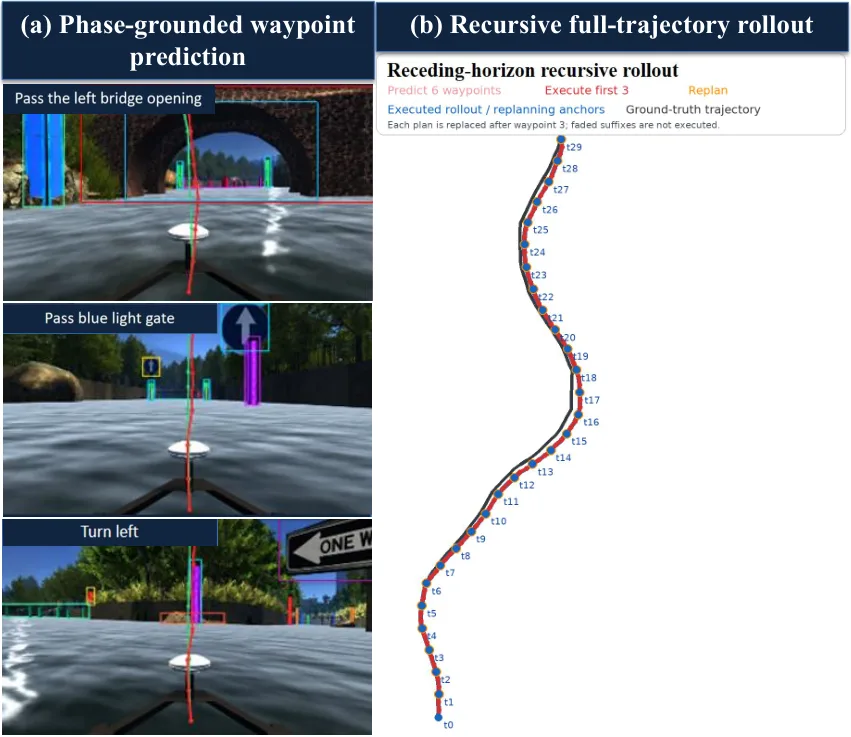
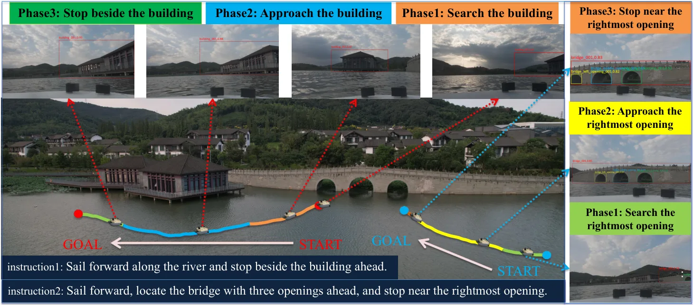
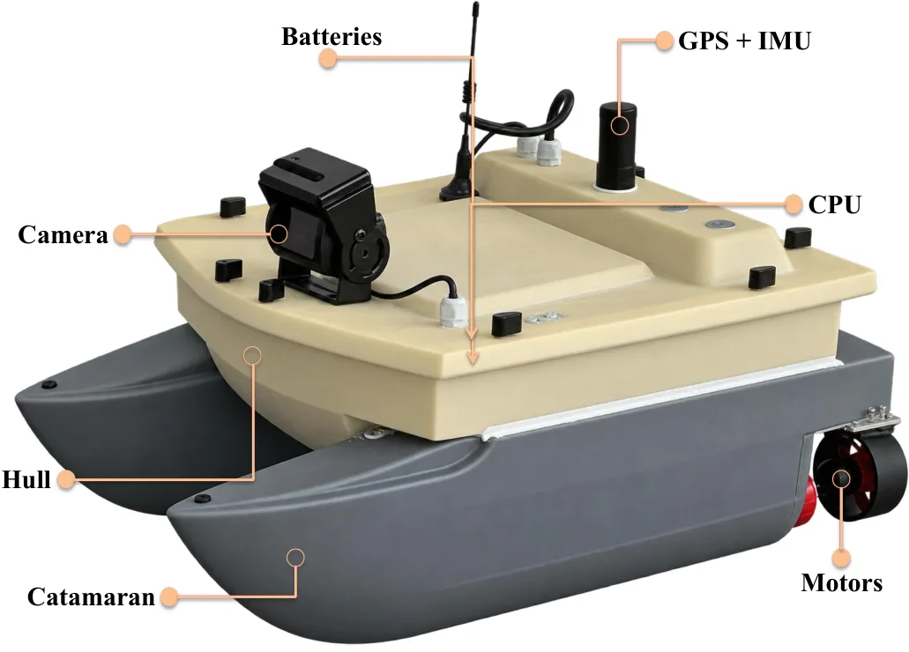

RiverVLN：面向无人水面艇的阶段落地时序 VLN
RiverVLN: Phase-Grounded Temporal Vision--Language Navigation for Unmanned Surface Vehicles
Unity–ROS 闭环导航平均成功率 0.79，并通过未见 bridge-opening 试验与真实 USV 实验验证阶段状态的迁移。
作者、单位与技术谱系 · Research context
作者与单位
研究脉络
- continuous USV navigation方法基座关系：本文将室内/陆地 VLN 的离散动作假设扩展到连续水面运动。[arXiv 官方 HTML v1]
- phase-grounded navigation方法推进关系：语义阶段成为长指令进度与局部控制之间的显式状态。[arXiv 官方 HTML v1]
合作网络
- RiverVLN六位作者 → RiverVLN benchmark关系：共同署名/项目[arXiv 官方 HTML v1]
- PGT-NAVUnity–ROS → real-world USV关系：仿真到真实验证[arXiv 官方 HTML v1]
作者和单位是原文事实；技术脉络是基于公开原文/项目关系的解读；未据此推断导师或师生关系。
方法本质拆解 · What actually changed
训练/参数
原文显示该方法基于现有模型或策略进行训练/评估，具体参数冻结与训练预算以原文为准。该条只记录已核验的系统层事实，不把推测写成配置。
约束与条件
方法把几何、时间、语义或动作表示作为额外条件。约束作用位置和是否硬约束以论文公式与实验协议为准。
推理流程
推理包含结构化表示、滚动执行或激活/策略处理。它不是凭标题推断的传统后端优化。
方法本质
核心是把空间证据接入决策变量，使模型在输入变化或长时程执行中保留可验证的几何/语义状态。
输入观测与结构化先验 + 作用于表示/动作的约束或聚合 + 闭环执行/干预 → 提升空间决策可靠性。

桥接价值Bridge
桥接价值
该工作把语言导航从离散室内动作推进到有惯性、侧滑和有限转弯半径的连续水面运动。语义阶段状态可以作为高层空间进度估计与低层控制之间的桥。
方法与模块Method
方法摘要
PGT-NAV 将长指令拆成有序、可视觉验证的 semantic phases，在线维护 active phase。模型融合视觉—运动历史和阶段 grounding，预测 6 个局部 SE(2) pose increments，并以 predict–execute–re-observe 闭环运行。
可迁移模块
可迁移模块是阶段进度状态、局部增量预测和地图安全层重规划。它们适合用于长时程导航中的语义事件检测与短窗状态估计。

证据Evidence
关键证据与数字
论文摘要明确给出 6 个局部 SE(2) 位姿增量和 Unity–ROS 平均成功率 0.79；还包含 unseen bridge-opening 与 real-world USV 实验。相对 GNM/ViNT 的漂移数字待核验。
边界与下一步Limits & Next Step
边界与风险
河流地标稀疏、视觉相似和船体动力学会放大阶段误切换；过晚停止或错误桥孔选择可能无法即时纠正。Unity 到真实水面传感器、天气和流速变化的迁移风险较大。
下一步实验
将 phase tracker 替换为带协方差的隐状态估计，分别注入视觉丢失、运动模型偏差和地标歧义。除成功率外记录位置/航向漂移、阶段切换延迟、重规划次数和安全违规。
{kind=link}

{kind=link}

{kind=link}
